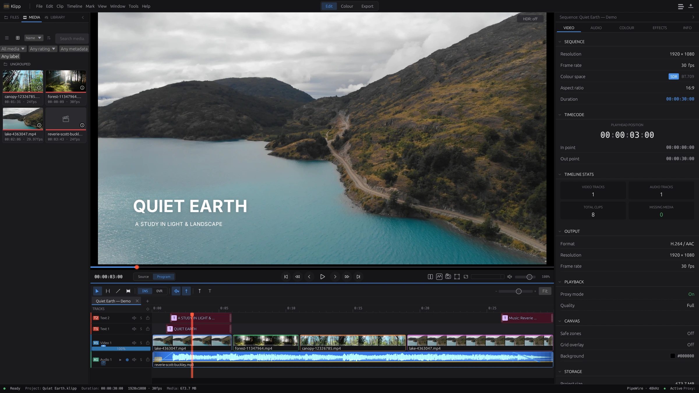
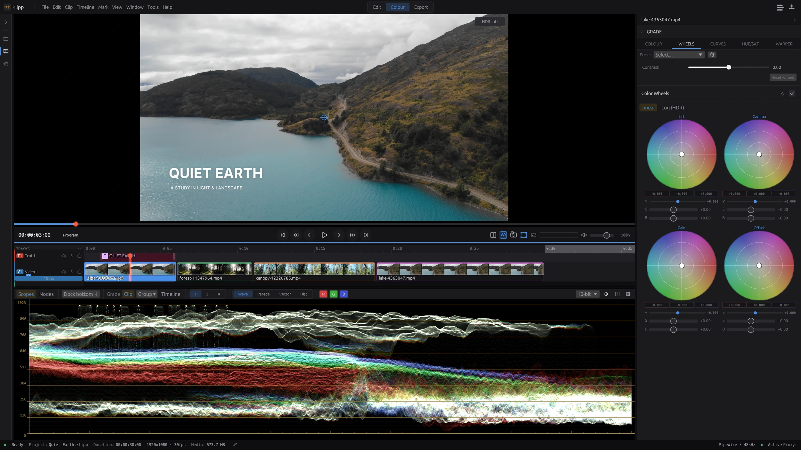

Built for Linux. In active development.
Find your cut.
Make it yours.
A native video editor with a magnetic timeline, scene-linear colour, and local AI tools. From the first assembly to the final frame.
Start with Klipp
01 / The edit
Room for the whole story.
Shape the rhythm. Keep picture, sound, and words together.
A timeline that moves with you
Build with magnetic multitrack editing, ripple trims, synced multicam, and speed ramps. Add titles and subtitles, or use the transcript to find your cut.
Sound belongs in the edit
Mix tracks, shape a voice with EQ and dynamics, and check delivery loudness. Voice isolation and dual-system sync help bring the recording into the sequence.
02 / The finish
A feel for the image.
A measure of the colour.
Work in a scene-linear ACEScg pipeline with camera-log decoding, node-based grades, colour wheels, curves, and GPU scopes. Finish for SDR or HDR.


03 / A helping hand
Your edit.
More ways to get there.
Transcribe, analyse, and automate.
Klipp’s built-in speech, vision, and audio models run locally. Connect an MCP-compatible assistant to inspect footage, propose an edit plan, build a sequence, and check the result.
An external assistant may use a local or cloud model, depending on your client. Local inference and external assistants are separate choices.
Read about the workflow ↗Made in Klipp
Thirty seconds of quiet.
A small nature study, edited and exported in Klipp. Play with sound for the music, or explore the workspaces above.
Mountain water, forest light, and a moving canopy. Instrumental music; no speech. Footage and music credits.
Start here
A work in progress.
Ready to explore.
Klipp is pre-release software. Expect rough edges and breaking changes. There are no pre-built releases or stability guarantees yet.
Build on Arch / Omarchy
x86_64 Linux · Vulkan 1.1 GPU required
git clone https://github.com/davidkodar/klipp.git
cd klipp/packaging
makepkg -si
klippFirst install the build prerequisites from the guide. Other distributions and broader GPU compatibility are still being tested.
Good to know
Which plugin formats does Klipp host?
OFX 1.5 and frei0r filters for video; LADSPA, LV2, and CLAP for audio. Support covers subsets of each format, and compatibility varies by plugin. Broad automated compatibility testing is ongoing. VST2 and VST3 are not supported.
Do I need AI to use Klipp?
No. AI features can be disabled in Preferences. Built-in models download on demand; connecting an external MCP assistant is optional.
Where can I find the documentation?
The repository contains the user guide, detailed project reference, and contribution guide.